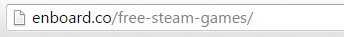

Building Enboard
History and Idea
After I've started my web design adventure I have amassed a big number of related bookmarks with articles, fonts, services, etc. Organizing everything and accessing it with browser default bookmarks manager was getting really tiring so I've looked into some bookmark managing services like Delicious etc. but unfortunately nothing cut it for me.
That's when I've got an idea to create a simple static page where I could keep all my bookmarks organized through categories in a way I liked to. I've named it DopeLists.com and at the beginning it was only about web design. Later on I've added other sections like front-end, after format and general.
I've later changed its name to Beaqn.in and also redesigned and refactored it a bit because of bad markup decisions and tiresome way of adding new links.
The website got a bit popular, shared many times and received good amount of e-mails with positive feedback and suggestions. Among the user feedback there were many questions if Beaqn source code could be used for their own lists. That's how I've got an idea to create web app where people could do exactly that but without messing in code.
Design
Boards layout and UX
I wanted to keep things simple and clean so that's why board is reduced to only essentials - items (with optional hover descriptions) organized through categories. That results in a glanceable and optimally packed content that can be quickly explored and accessed by users.
Board owners can quickly edit categories and items placement thanks to drag and drop interface. Content addition is also quick and easy, link items have auto-filled titles and descriptions scraped from websites open graph tags with fallback to standard site title and meta description tags.
Counting number of shares
To miminize page load speeds, especially on smartphones I've decided to not use any external sharing widgets since they are really big performance hogs. Instead I've created custom sharing buttons that open sharing dialog in new popup window. Share count is displayed in a board header as a cumulative number updated every 6 hours from selected social networks, e.g. I don't count reddit upvotes as shares. That way I don't need to use any bloated iframes and limit network requests to minimum.
Suggestions
Everyone can make suggestions to public boards. Boards owners are notified when suggestion is sent and then can review (suggestions are automatically marked for read and unread) and delete them.
Changelog
When board owners add, modify or delete items it gets logged in the changelog that can be seen by anyone that can access board. Different types of log events have different icons and are color coded for quicker scanning through a lot of log items.
URL Design
Boards are using top level directory after domain name because I wanted them to be memorable and easily accessible. Every new board has automatically generated unique 6 character long alphanumeric string. When board is created the owner can add another alias for board using custom slug which is not taken by another board and not used by other Enboard views. That way board creation is faster and people who don't need specific board aliases (e.g. in private boards) aren't forced to take names that could be used by other users.
Settings
Every board settings page is splitted with 4 tabs in a way that lets users to quickly change the thing they are after:
- Basic: basic board information - title, optional description, board url and theme.
- Image: here users can upload, change or delete board image.
- Visibility: board visibility options with descriptions.
- Delete: board deletion feature requiring user to type his password so they don't delete it by accident and for further security.

Development
Tech Stack
Enboard couldn't be made in such a short span of time without libraries and services listed below.